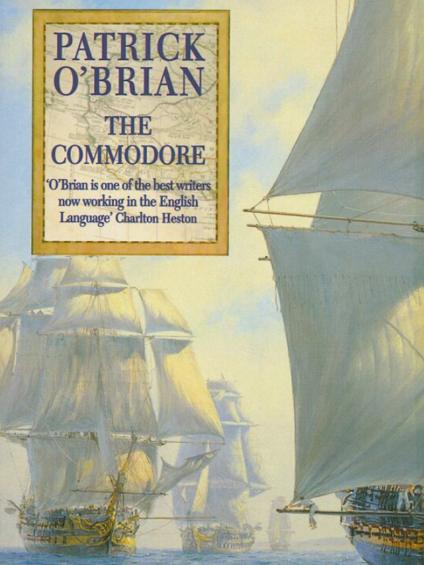
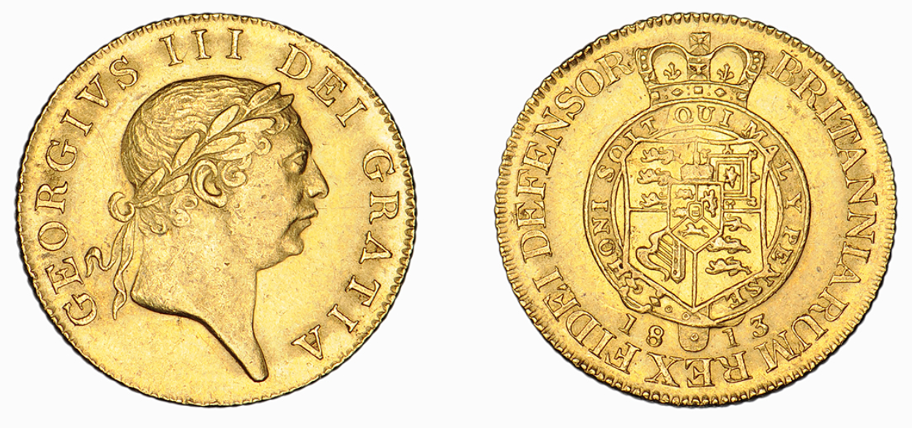
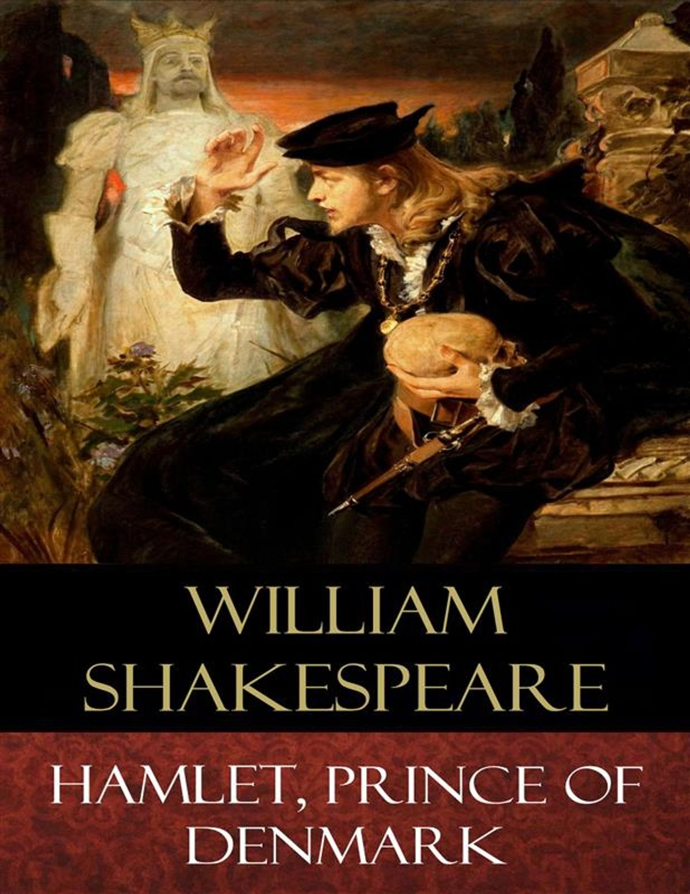

나폴레옹 시대, 영국 신사의 플렉스 - The Commodore 중 한 장면
게시: 2020-07-16T06:30:34+09:00
지난 번 번역했던 'The Commodore' 편에서 링글 호 탈출 이야기의 바로 이어지는 뒷부분으로서, 나폴레옹 시절 영국 신사(정확하게는 아일랜드 신사)의 돈자랑 인맥자랑, 즉 플렉스를 보여주는 장면입니다. 지난 번 링글 호의 활약으로 프랑스 사략선의 추격으로부터 탈출한 스티븐은 엄청난 거금인, 몇 상자의 금화 궤짝을 가지고 스페인 코루냐 항구에 입항합니다. 그런데 프랑스 사략선이야 속도와 항해술로 탈출할 수 있지만, 항구에 진을 치고 기다리는 세관원은 피할 방법이 없습니다. 진보-보수를 떠나 세금 내는 것 좋아하는 사람은 없지요. 과연 스페인 세관원을 어떤 식으로 통과해야 할까요 ?

The Commodore by Patrick O'Brian (배경 : 1812년 스페인 항구에 입항한 영국 소형 선박 링글 Ringle 호) ----- 스티븐이 뱃머리에 서서 분주한 항구와 시내를 미소를 띠고 바라보고 있을 때, 밀수꾼 출신 고참 선원인 모울드가 아주 자연스러운 태도로 슬그머니 그의 옆으로 다가오더니 입을 거의 벌리지 않고 은밀하게 (out of the corner of his mouth) 그에게 말을 걸었다. "저와 제 친구들은 그로인(Groyne, 코루냐를 영국인들이 부르던 이름)을 우리 고향 포구인 쉘머스톤(Shelmerston) 만큼이나 친숙하게 알고 있습니다. 우리가 브랜디 밀수하러 들르던 곳이 바로 여기거든요. 그러니까 말입니다, 선생님께서 화물을 '조심스럽게 (discreet)' 하역하고 싶으시다면, 우리가 적당히 선을 댈 곳을 알고 있습니다. 아주 정직한 패거리들이지요. 그렇지 않았다면 걔들 벌써 뒷골목에서 목이 졸렸을 거라구요. 걔들이 아직 살아있다는 것이 걔들의 신뢰성을 입증해줍니다." "고맙네, 모울드. 그렇게 친절한 제안을 해주다니 정말 고마워. 하지만 이번에는 - 그러니까 이번만은 말이야 - 내 화물들을 완전히 적법하게 통관시키려고 하네. 항만장(the captain of the port)과 그 부하 관원들에게 내가 말하려는 것도 그걸세. 그래도 자네와 자네 친구들의 친절함과 사려 깊음에 대해서는 정말 고맙게 생각하네." 몇 시간 뒤에 스티븐은 소년 함장인 리드와 두 명의 고위 항만 관료들과 링글 호의 선실에 앉아 있었는데, 리드는 정말 단 한 마디의 말도 안 하고 있었다. (역주: 리드는 나이도 어리지만 일단 스페인어를 못합니다) 스티븐이 말했다. "이 배는 최근에 여러분께서 직접 보신 영국 해군 전열함(His Britannic Majesty's ship) 벨로나(Bellona) 호의 부속선(tender)입니다. 이 배에 실린 군수 물자는 물론 상품(merchandise)이 아니고, 그 외에는 이 배에 어떠한 화물도 실려 있지 않습니다. 다만 제 개인 소유인 귀중품이 좀 있는데요, 저는 그 귀중품을 이 도시에 있는 '성령과 상업 은행'(the Bank of the Holy Ghost and of Commerce)에 예치하려고 합니다. 그 은행장인 돈 호세 루이스(don Jose Ruiz)와 저는 친분이 좀 있고, 애초에 그 귀중품은 그 분이 제게 보내주었던 것이거든요. 귀중품은 영국 기니화(English guineas)로 주조된 금화이므로 물론 면세 대상입니다."

(1813년 주조된, 조지 3세의 얼굴이 새겨전 소위 'Military Guinea' 금화입니다. 대륙에서 나폴레옹 전쟁을 수행하면서 영국군이 여기저기 외국에 이런저런 비용을 지불하기 위해 만들어졌기 때문에 그런 이름이 붙었답니다.)
"금액이 큰 가요?" "기니 금화의 개수는 제가 모르겠습니다만 무게는 아마 5톤에서 6톤 정도 되는 것 같습니다. (역주 : 5.5톤으로 잡으면 현재 원화로 대략 3천7백억원입니다 !) 실은 그래서 여러분께 이 배를 부둣가에 직접 정박시킬 수 있도록 해주십사 간곡히 부탁을 드렸던 것입니다. 그리고 그 궤짝들을 실어나르도록 믿을 수 있는 장정들을 한 20명 정도 빌려주십사 하고도 부탁드렸고요. 아 그리고 이건 - " 그는 캔버스천으로 만든 두 개의 묵직한 자루를 가리키며 말을 이었다. "여기에 약소하나마 여러분 재량에 따라 적절히 분배하셨으면 하는 금액을 좀 넣었습니다. 그러면 모든 것에 다 동의가 되었다고 봐도 될까요 ? 실은 빨리 상륙해서 이 금화에 대해 돈 호세와 이야기를 하고, 그 다음으로는 주지사님께 문안 인사를 드리러 가고 싶거든요." "아이고 선생님." 관원들은 일제히 외쳤다. "주지사님은 지금쯤 바야돌리드로 절반 정도 가셨을 겁니다. 선생님을 못 뵌 것을 아시게 되면 정말 낙심하실 거에요." "그래도 돈 파트리시오 피츠제랄드 이 사아베드라(Colonel don Patricio FitzGerald y Saavedra)는 시내에 있겠지요 ?" "아 그럼요 그럼요, 돈 파트리시오는 부하들 모두와 함께 시내에 있습니다." (시간이 지난 뒤) "내 사촌 스티븐 !" 대령이 외쳤다. "만나서 얼마나 기쁜지 모르겠군. 갈리시아(Galicia)까지 무슨 좋은 바람이 불어서 왔는가 ?" "먼저 자네 안부를 묻고 싶군. 요즘 운수는 좋은 편인가 ? (Kindly used by Fortune?)" "그저 그렇지 뭐. (역주 : 원문은 Faith, her privates me 입니다. 이건 세익스피어의 햄릿 2막 2장에 나오는 길든스턴의 대사 "Faith, her privates we"를 변형시킨 것으로서 '믿으세요, 저희는 행운의 여신 치하의 평민에 불과합니다'라는 뜻입니다. 정말 배운 사람들끼리의 대화에서나 나올 수 있는 유식함의 플렉스입니다.) 하지만 병정이 투덜대면 안돼지. 자, 용건을 말해보게."

"그게 말일세, 패트릭, 내가 딸 브리짓과 걔를 돌봐주는 숙녀분을 데리고 왔다네. 내 딸이 아빌라(Avila)에 있는 페트로닐리아 숙모님 댁에서 한동안 지냈으면 해서 말이야. 파딘 콜맨이라는 하인도 딸려 있긴 한데, 그래도 요즘 시골길이 흉흉한데다 여정도 멀지 않은가 ? 게다가 나도 곧 공무로 떠나야 하고 말이야. 내 딸 일행 중에는 스페인어 할 줄 아는 사람도 없는데 그들끼리 길을 떠나게 하는 것은 불안해서 말이지. 은행장 루이즈가 프랑스어를 할 줄 아는 하인과 일반적인 경호원이 딸린 마차를 알아봐주긴 했네만, 자네 기병대원 중 6명 정도와 장교 한 명을 빌려줄 수 있다면 정말 고맙겠네. 내가 정말 기쁜 마음으로 출항할 수 있을 거야." 대령은 당연히 그가 원하는 것을 다 들어주었다. 하지만 링글 호의 이물에 서서, 큼직한 8두마차가 앞뒤에 기병대의 호위를 받아가며 코루냐 시 뒤편의 언덕을 올라가는 모습과, 그 창 밖으로 두 개의 손이 하얀 손수건을 끝까지, 언덕 너머로 마차가 사라질 때까지 흔드는 것을 바라보는 스티븐의 얼굴은 기쁘기보다는 오히려 더 슬픈 쪽에 가까왔다.
(보시다시피, 유식하면 굳이 불법을 저지르지 않고도 관세 등의 세금을 절감할 수 있고, 돈이 많아서 수고비를 인심 좋게 뿌리면 이사람 저사람에게 뭔가 부탁할 때도 저렇게 예의바르면서도 당당할 수 있군요. 저도 금화 5~6톤은 고사하고 5~6kg만 있어도 좋겠습니다.)